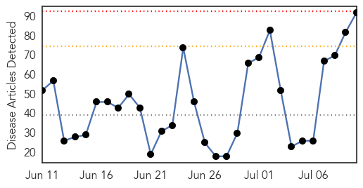
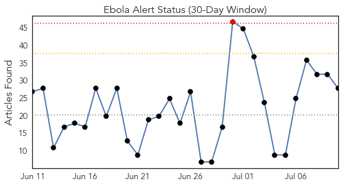
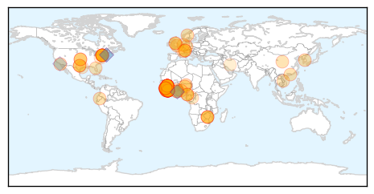
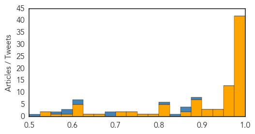

Toggle navigation
Early Warning
Daily Alerts
Ebola
Jul 10, 2015
Compare to:
-
Dengue Fever
Hemmorhagic Fever
Mold/Fungal Infection
Influenza
Meningitis
Pertussis / Whooping Cough
Middle East Respiratory Syndrome
Cholera
Hepatitis
Chikungunya
Yellow Fever
Bubonic Plague
West Nile Virus
Swine Flu
Measles
Unknown
Mumps
30 Day Trends
Web: 0
alerts
, 0
warnings
Twitter: 1
alerts
, 0
warnings
Top Articles:
Showing top 50 articles...
1.000
Surge of Ebola in Liberia May Be Linked to a Survivor
1.000
Liberia confirms 2 new Ebola cases
1.000
Liberia Announces Two New Confirmed Cases of Ebola Virus
1.000
Tests show Ebola probably remained latent in Liberia
1.000
Tests show Ebola probably remained latent in Liberia
1.000
Tests show Ebola probably remained latent in Liberia
1.000
Redemption of an Ebola-hit hospital in Monrovia
1.000
Liberia update: New information from genetic sequencing - Liberia
1.000
Ebola Strain in New Liberia Cases Same as Virus From Last Year's Outbreak
0.999
Mugabe Calls for Inclusive, Complimentary Approach in Tackling Ebola
0.999
Surge of Ebola in Liberia 'linked to a survivor'
0.999
President leads African delegation in US
0.999
Ebola research efforts shift to improving survivors' health
0.999
Are we ready for Ebola?
0.999
Liberia: Liberia update: New information from genetic sequencing
0.999
Source of new Liberian Ebola outbreak a mystery
0.998
Ebola virus needs $3.2 billion says United Nations conference,
0.998
Ebola virus needs $3.2 billion says United Nations conference,
0.998
WHO Says Ebola Recovery is Impossible Unless Resilient Health Systems are Rebuilt
0.998
EU response to the Ebola outbreak in West Africa - Sierra Leone
0.998
Liberia Records Two New Cases Of Ebola To Make Five
0.998
Tests show Ebola in Liberia linked to virus found months ago - MyNorthwest
0.998
Tanzanian Nurse In Self-Quarantine After Serving In Liberia
0.998
EU response to the Ebola outbreak in West Africa
0.997
UN meeting seeks aid for economies battered by 20,000-plus Ebola deaths
0.997
Ebola-hit countries appeal for billions for recovery
0.997
UN meeting seeks aid for economies battered by 20,000-plus Ebola deaths - Xinhua
0.996
Ebola-hit countries seek billions for recovery at UN
0.996
New Jump in Ebola Virus Case – Seven in Treatment Units
0.995
African Nations Seek Billions for Ebola
0.995
Ebola-hit countries seek billions for recovery
0.995
Gene study points to Liberian source for new Ebola cluster
0.994
Ebola-hit countries seek billions for recovery at UN
0.994
WHO ‘unfit for health emergencies’ – BBC News
0.992
President warns against Ebola complacency
0.992
Sierra Leone extends Ebola curfews indefinitely
0.990
President pays tribute to AU Ebola response
0.989
Damning report says WHO unfit to handle emergencies like Ebola
0.989
New Ebola Infections Brings Number of Liberia Cases to 5 - Liberia
0.987
International Ebola Recovery Conference convenes
0.986
World Bank warns of rising maternal deaths post-Ebola
0.977
Cuba's Ebola Response Thrills UN Envoy
0.975
Beware Of Ebola And Cholera Students Sensitized
0.975
West African Health Organisation Day observed
0.975
Nigeria not planning to ban flight from Liberia over Ebola threat
0.974
Latest report on Global potential analysis of ebola drug and vaccines market is expected to reach $56 million by 2020 just published
0.974
Ebola-hit countries unified in regional recovery plans, call for international support
0.973
West African nations appealing for billions of dollars in Ebola relief
0.970
UN special envoy commends Cuba's response to Ebola crisis
0.963
Prime Minister congratulates Ebola heroes
Top Tweets:
0.974
Tests show Ebola in Liberia linked to virus found months ago - KSWO http://t.co/OZPTfjekGm ebola EVD
0.966
Tests show Ebola in Liberia linked to virus found months ago - Bradenton Herald http://t.co/lcYCrUDbrZ ebola EVD
0.956
Genetic sequence of Ebola virus from Liberia suggests the new cluster isn't a reintroduction: @WHO. Ebola never left http://t.co/TAdAERGy4p
0.920
Ebola recovery goals focus on rebuilding health systems - CIDRAP http://t.co/QWnaN4LtUP ebola EVD
0.887
Ebola research efforts shift to improving survivors' health - Baltimore Sun http://t.co/NupKj4Rnof ebola EVD
0.872
The Same CDC with Serious Anthrax and Ebola Lab Mishaps Also Handles ... - Age of Autism http://t.co/JiveU7m87s ebola EVD
0.867
Surge of Ebola in Liberia May Be Linked to a Survivor - New York Times http://t.co/jAHL6hSaqC ebola EVD
0.865
Community Knowledge, Attitudes, and Practices Regarding Ebola Virus Disease — Five Counties, Liberia @cdcgov http://t.co/1tc6DLdce5
0.850
Ebola Eradication Key - Zim Health Minister - http://t.co/NaiI6Jl8yj http://t.co/SfKvQw2lDD ebola EVD
0.846
Ebola : Quelles leçons tirer de l’épidémie actuelle ? @ACF_France http://t.co/ZgzP5JUseM
0.841
2 new ebola cases being treated in monrovia liberia . EndEbolaNow KeepFighting WeCanFightThis
0.830
ONU realiza Conferência Internacional de Recuperação do Ebola http://t.co/ghW6zlvaoj
0.826
RT: "The emergency is not over until we are down to zero Ebola cases" -- @StylianidesEU: http://t.co/UZ62OhsPYk Ebola…
0.815
Ebola in Liberia: @WHO says the virus from 1st case in new cluster looks like viruses from 6 months back. Missed chains of transmission?
0.787
Tests show Ebola in Liberia linked to virus found months ago - KSWO, Lawton ... - KSWO http://t.co/YqYL8C3A2R
0.778
Nigerian Doctors In America Warn Against Possible Resurfacing Of Ebola - CHANNELS TELEVISION http://t.co/3qC50jCPpq ebola EVD
0.678
RT: USAID to invest b/t $250k-$2m in individual partnerships in Ebola-affected countries. Learn more: http://t.co/3V3rQt6GLz Ebola
0.660
$3.2 billion needed for Ebola recovery in Guinea, Liberia & Sierra Leone https://t.co/KibSDXE6EU EbolaResponse http://t.co/sAEw8IVj9G
0.653
EuropeanCommission response to the Ebola outbreak, 10 jULY 2015. pledge of €450 million http://t.co/XTjbYOIVOO
0.647
10 July - news pouch on avianflu avianinfluenza Ebola EbolaResponse MERS is here: http://t.co/3d0cxrn3w5
0.629
La Grande Finale Africa Stop Ebola aura lieu le 29 juillet au Palais du peuple de Conakry ! Découvrez chaque jour... http://t.co/mTLb2J7PMq
0.620
Ebola-hit countries appeal for $3.2 billion to rebuild - WBTW - Myrtle Beach and Florence SC http://t.co/SXGqMZbsyp ebola EVD
0.619
Ebola Alert Debunks Rumours - http://t.co/LYXkAgOFfG http://t.co/c8zC5x9bf6 ebola EVD
0.567
RT: Ban Ki-moon demande de concrétiser les promesses de solidarité et de soutenir les pays touchés par l’Ebola EbolaRespo…
0.560
People are still dying from Ebola; we need to take drastic measures - our report from Port Loko, Sierra Leone http://t.co/oK6yiOP2gj
0.535
Surge of Ebola in Liberia May Be Linked to a Survivor http://t.co/mPzilopMw8
0.531
We are tired of being embarrassed as a district, holding the country to ransom. http://t.co/oK6yiOP2gj Ebola PortLoko Sierra Leone
0.506
Guinea. Faces of Ebola healthworkers photos http://t.co/xCPbD1d0EQ
Web/News Articles

Tweets

Article Locations

Article Confidences
